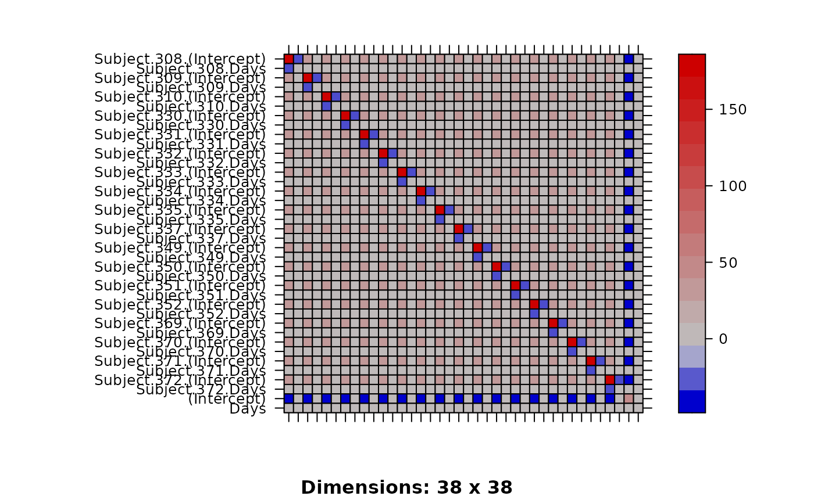

Covariance matrix of estimated parameters
vcov.merMod.RdCompute the variance-covariance matrix of estimated paramers. Optionally also computes correlations, or the full (joint) covariance matrix of the fixed-effect coefficients and the conditional modes of the random effects.
Arguments
- object
an R object of class
merMod, i.e., as resulting fromlmer(), orglmer(), etc.- correlation
(logical) indicates whether the correlation matrix as well as the variance-covariance matrix is desired
- sigm
the residual standard error; by default
sigma(object).- use.hessian
(logical) indicates whether to use the finite-difference Hessian of the deviance function to compute standard errors of the fixed effects. See Details.
- full
return the 'full' covariance matrix, i.e. the joint covariance matrix of the conditional distribution of conditional modes (as in
getME(., "b")) and fixed-effect parameters. (correlationanduse.hessianare ignored in this case.)Note that this option may be slow for models with large numbers of random-effect levels!
- ...
extra arguments for method compatibility (ignored)
Details
When use.hessian = FALSE, the code estimates the
covariance matrix based on internal information about the inverse of
the model matrix (see getME(.,"RX")). This is exact for
linear mixed models, but approximate for GLMMs.
The default is to use the Hessian whenever the
fixed effect parameters are arguments to the deviance
function (i.e. for GLMMs with nAGQ>0), and to use
getME(.,"RX") whenever the fixed effect parameters are
profiled out (i.e. for GLMMs with nAGQ==0 or LMMs).
use.hessian=FALSE is backward-compatible with older versions
of lme4, but may give less accurate SE estimates when the
estimates of the fixed-effect (see getME(.,"beta"))
and random-effect (see getME(.,"theta")) parameters
are correlated.
However, use.hessian=TRUE is not always more accurate: for some
numerically unstable fits, the approximation using RX is
actually more reliable (because the Hessian has to be computed by
a finite difference approximation, which is also error-prone): see
e.g. https://github.com/lme4/lme4/issues/720
Examples
fm1 <- lmer(Reaction ~ Days + (Days | Subject), sleepstudy)
gm1 <- glmer(cbind(incidence, size - incidence) ~ period + (1 | herd),
data = cbpp, family = binomial)
(v1 <- vcov(fm1))
#> 2 x 2 Matrix of class "dpoMatrix"
#> (Intercept) Days
#> (Intercept) 46.575120 -1.451088
#> Days -1.451088 2.389466
v2 <- vcov(fm1, correlation = TRUE)
# extract the hidden 'correlation' entry in @factors
as(v2, "corMatrix")
#> 2 x 2 Matrix of class "corMatrix"
#> (Intercept) Days
#> (Intercept) 1.0000000 -0.1375519
#> Days -0.1375519 1.0000000
v3 <- vcov(gm1)
v3X <- vcov(gm1, use.hessian = FALSE)
#> Warning: variance-covariance matrix computed from finite-difference Hessian
#> and from RX differ by >1e-04: consider 'use.hessian=TRUE'
all.equal(v3, v3X)
#> [1] "Mean relative difference: 0.02937752"
## full correlatiom matrix
cv <- vcov(fm1, full = TRUE)
image(cv, xlab = "", ylab = "",
scales = list(y = list(labels = rownames(cv)),
at = seq(nrow(cv)),
x = list(labels = NULL)))
